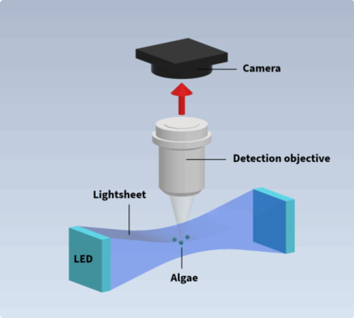
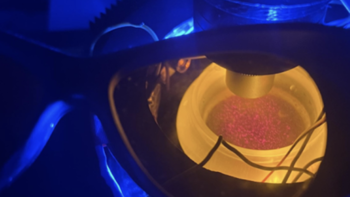
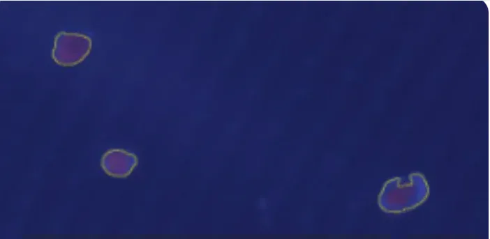

My work at LineSpect moved between CAD, the 3D printer, the soldering station, and the optics bench within the same day. In a small startup, I touched every part of the system.
HABForecastr is a submersible microscope that predicts harmful algal blooms 7 days in advance, at 1/6th the cost of current detection systems. I worked on the optical and mechanical systems that make this possible.

HABForecastr optical system: lightsheet microscopy setup for algae detection

Microscope assembly with algae sample under UV illumination
Tested multiple setups (700, 1000, 1200 mA) to define optimal current levels for brightness without component damage
Used ImageJ and custom 3D-printed jigs to measure FOV, depth of field, and light sheet thickness
Demonstrated UV lighting was unnecessary by comparing results with laser illumination

Algae cells captured using the optimized imaging system
Created comprehensive CAD mockup of the product to support proposal development for environmental monitoring applications
Diagnosed and recovered SLA and FDM printers, resolving both hardware and firmware issues to restore full functionality.
The HABForecastr technology has the potential to save millions annually by providing early warning of harmful algal blooms, protecting coastal communities, industries, and public health.